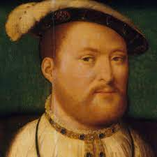

•Anne of Cleves•
1515–1557

Source: wiki
By Hans Holbein the Younger, c.1539
Anne of Cleves (German: Anna von Kleve) was Queen of England from 6 January to 12 July 1540 as the fourth wife of King Henry VIII.Not much is known about Anne before 1527, when she became betrothed to Francis, Duke of Bar, son and heir of Antoine, Duke of Lorraine, although their marriage did not proceed. In March 1539, negotiations for Anne's marriage to Henry began, as Henry believed that he needed to form a political alliance with her brother, William, who was a leader of the Protestants of Western Germany, to strengthen his position against potential attacks from Catholic France and the Holy Roman Empire.
Anne arrived in England on 27 December 1539 and married Henry on 6 January 1540, but after six months, the marriage was declared unconsummated and, as a result, she was not crowned queen consort. Following the annulment, Henry gave her a generous settlement, and she was thereafter known as the King's Beloved Sister.Remaining in England, she lived to see the reign of Edward VI, and the coronation of Mary I, outliving the rest of Henry's wives.
Anne was born in 1515, on either 22 September,or more probably 28 June.She was born in Düsseldorf,the second daughter of John III of the House of La Marck, Duke of Jülich jure uxoris, Cleves, Berg jure uxoris, Count of Mark, also known as de la Marck and Ravensberg jure uxoris (often referred to as Duke of Cleves) who died in 1538, and his wife Maria, Duchess of Jülich-Berg (1491–1543). She grew up in Schloss Burg on the edge of Solingen.
In 1527, at the age of 11, Anne was betrothed to Francis, the 9-year-old son and heir of Antoine, Duke of Lorraine.But because Francis was under the age of consent (10 years old) at the time of the arrangement, the betrothal was considered unofficial and was cancelled in 1535. Her brother William was a Lutheran but the family was unaligned religiously, with her mother, the Duchess Maria, described as a "strict Catholic".Her father's ongoing dispute over Gelderland with Charles V made the family suitable allies for England's King Henry VIII in the wake of the Truce of Nice. The match with Anne was urged on the king by his chief minister, Thomas Cromwell.
The artist Hans Holbein the Younger was dispatched to Düren to paint portraits of Anne and her younger sister, Amalia, each of whom Henry was considering as his fourth wife. Henry required the artist to be as accurate as possible, not to flatter the sisters. The portraits are now located in the Musée du Louvre in Paris and the Victoria and Albert Museum in London. Another 1539 portrait, by the school of Barthel Bruyn the Elder, is in the collection of Trinity College, Cambridge.
Henry valued education and cultural sophistication in women, but Anne lacked these traits. She had received no formal education but was skilled in needlework and liked playing card games. She could read and write, but only in German.Nevertheless, Anne was considered gentle, virtuous and docile, which is why she was recommended as a suitable candidate for Henry.
Despite Henry's very vocal misgivings, the two were married on 6 January 1540 at the royal Palace of Placentia in Greenwich, London, by Archbishop Thomas Cranmer. The phrase "God send me well to keep" was engraved around Anne's wedding ring. Immediately after arriving in England, Anne conformed to the Catholic form of worship which Henry had retained after his break with Rome.The couple's first night as husband and wife was not a successful one. Henry confided to Cromwell that he had not consummated the marriage, saying, "I liked her before not well, but now I like her much worse".In February 1540, speaking to the Countess of Rutland, Anne praised the King as a kind husband, saying: "When he comes to bed he kisseth me, and he taketh me by the hand, and biddeth me 'Good night, sweetheart'; and in the morning kisseth me and biddeth 'Farewell, darling.'" Lady Rutland responded: "Madam, there must be more than this, or it will be long ere we have a duke of York, which all this realm most desireth."Anne was commanded to leave the Court on 24 June, and on 6 July she was informed of her husband's decision to reconsider the marriage. Witness statements were taken from a number of courtiers and two physicians which register the king's disappointment at her appearance. Henry had also commented to Thomas Heneage and Anthony Denny that he could not believe she was a virgin.
Shortly afterwards, Anne was asked for her consent to an annulment, to which she agreed. Cromwell, the moving force behind the marriage, was attainted for treason. The marriage was annulled on 12 July 1540, on the grounds of non-consummation and her pre-contract to Francis of Lorraine. Henry VIII's physician stated that after the wedding night, Henry said he was not impotent because he experienced "duas pollutiones nocturnas in somno" (two nocturnal pollutions while in sleep).
•Learn more about King Henry the 8th•

His Life

His Achievements

His Six Wives